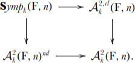

This seminar is an informal, discussion-style seminar for those interested in derived geometry.
We will focus on explicit constructions in, and applications of derived geometry
(algebraic, analytic, smooth). We will NOT focus on the
theoretical foundation of derived geometry. That is not to say that we expect the audience
to be familiar with the basics; instead we will focus on learning the basics by example as opposed
to, say, reading everything ever written by Töen and Vezzosi.